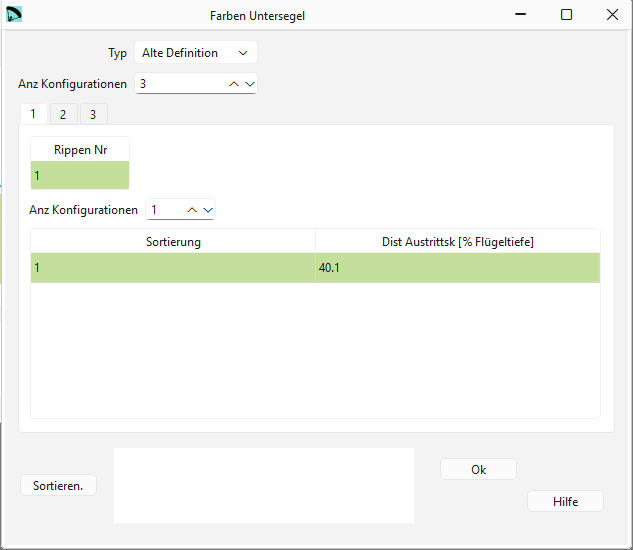
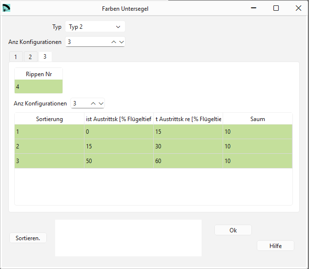

Farben Untersegel: Alte Definition¶
Wenn Du verschiedene Farben im Untersegel verwenden willst, kannst Du hier Schnittmarken definieren.
Farben Untersegel wird nach demselben Schema konfiguriert wie Farben Obersegel. Eine detailliertere Beschreibung mit Beispiel findest Du hier
{kind=link}

Rohdaten:
*****************************************************
* 16. Intrados colors
*****************************************************
3
1 1
1 40.1 0.
2 1
1 20.15 0.
3 1
1 0.0 0.
Anz Konfigurationen¶
Farben Untersegel ist eine optionale Konfiguration.
Wenn Du keine Farbmarkierungen verwenden möchtest, dann setze den Wert von Anz Konfigurationen auf 0.
Rippen Nummer¶
Die Rippen Nummer für die aktuelle Konfiguration.
Dist Austrittskante¶
Die Distanz der Markierung von der Austrittskante in [% Flügeltiefe].
Sortieren¶
Mit der Schaltfläche Sortieren können die Zeilen neu angeordnet werden. Wenn das gemacht werden soll kannst Du die neuen Nummern in der ersten Spalte einsetzten und anschliessend mit der Schaltfläche die Tabelle neu sortieren.
Farben Untersegel: Typ 2 (seit V3.24)¶
{kind=link}

Rohdaten:
*****************************************************
* 16. Intrados colors
*****************************************************
-2
3
2 1
1 40.1 20.15 10. 0.
3 1
1 20.15 0.00 10. 0.
4 3
1 0.0 15.0 10. 0.
2 15.0 30.0 10. 0.
3 50.0 60.0 10. 0.
- Beispiel oben:
Panels 2,3,4 mit Markierungen
Panel 2 und 3 mit 1 je einer Markierung
Panel 4 mit 3 Markierungen
Anz Konfigurationen¶
Farben Untersegel ist eine optionale Konfiguration.
Wenn Du keine Farbmarkierungen verwenden möchtest, dann setze den Wert von Anz Konfigurationen auf 0.
Rippen Nummer¶
Die Rippen Nummer für die aktuelle Konfiguration.
Dist Austrittskante¶
Die Distanz der Markierung von der Austrittskante in [% Flügeltiefe] auf der linken Seite der Zelle.
Dist Austrittskante re¶
Die Distanz der Markierung von der Austrittskante in [% Flügeltiefe] auf der rechten Seite der Zelle.
Saum¶
Saumbreite in [mm].
Sortieren¶
Mit der Schaltfläche Sortieren können die Zeilen neu angeordnet werden. Wenn das gemacht werden soll kannst Du die neuen Nummern in der ersten Spalte einsetzten und anschliessend mit der Schaltfläche die Tabelle neu sortieren.
Spezialfall: Wenn der Flügel eine ungerade Anzahl von Feldern hat (mittleres Feld mit einer Breite ungleich Null), wird der Schnitt links vom mittleren Feld (Feld 1) genau auf der Symmetrieachse des Flügels definiert, um symmetrische Designs zu ermöglichen. Eine detaillierte Beschreibung in englisch findest Du auf der Laboratori d'envol website.